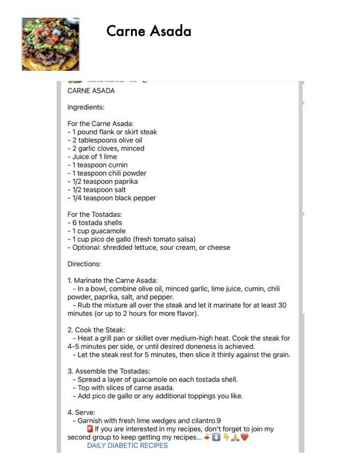

Carne Asada

Original cookbook page 730
Ingredients
- For the Carne Asada:
- - 1 pound flank or skirt steak
- - 2 tablespoons olive oil
- - 2 garlic cloves, minced
- - Juice of 1 lime
- - 1 teaspoon cumin
- - 1 teaspoon chili powder
- - 1/2 teaspoon paprika
- - 1/2 teaspoon salt
- - 1/4 teaspoon black pepper
- For the Tostadas:
- - 6 tostada shells
- - 1 cup guacamole
- - 1 cup pico de gallo (fresh tomato salsa)
- - Optional: shredded lettuce, sour cream, or cheese
Instructions
- Marinate the Carne Asada: - Ina bowl, combine olive oil, minced garlic, lime juice, cumin powder, paprika, salt, and pepper. - Rub the mixture all over the steak and let it marinate for at I minutes (or up to 2 hours for more flavor).
- Cook the Steak: - Heat a grill pan or skillet over medium-high heat. Cook the 4-5 minutes per side, or until desired doneness is achieved. - Let the steak rest for 5 minutes, then slice it thinly against t
- Assemble the Tostadas: - Spread a layer of guacamole on each tostada shell. - Top with slices of carne asada.
- Serve: - Garnish with fresh lime wedges and cilantro.9 @ If you are interested in my recipes, don't forget to join second group to keep getting my recipes... +0 QaL1gd DAILY DIABETIC RECIPES
Recipe #730 from collection